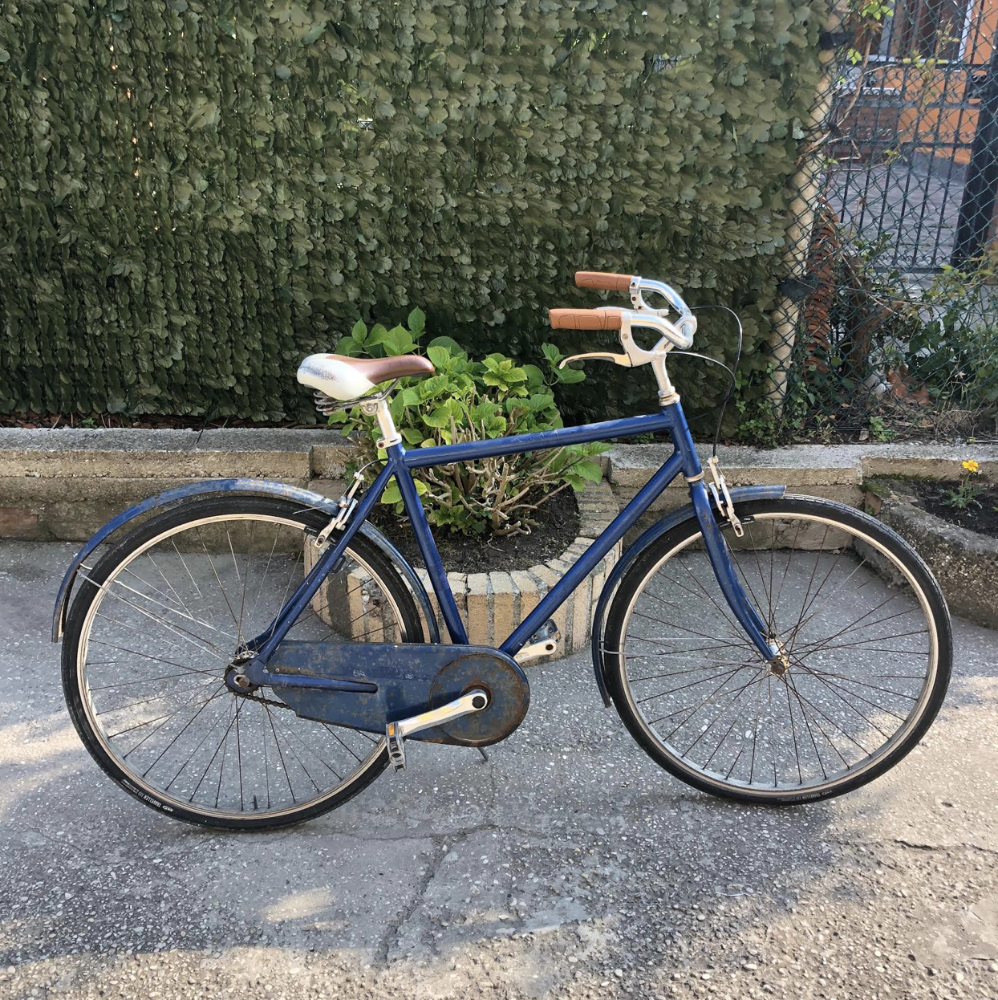
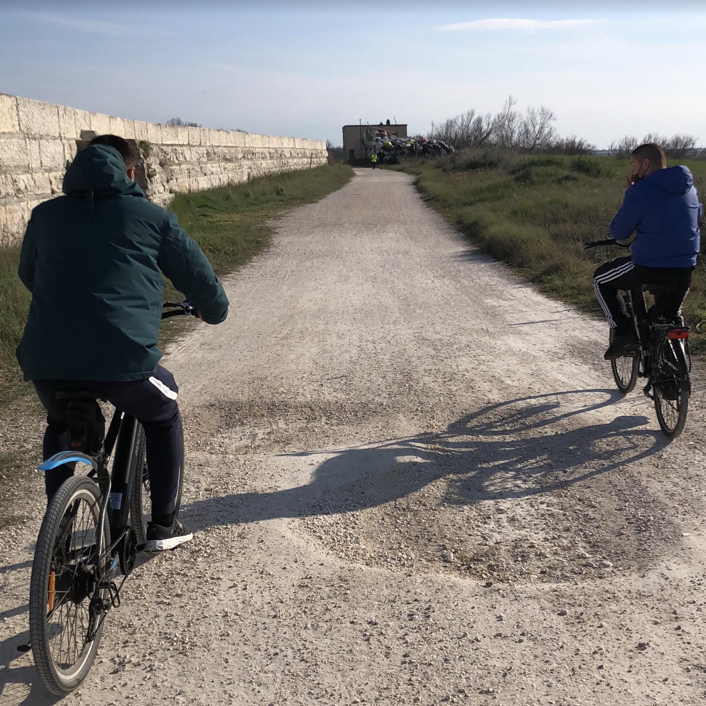
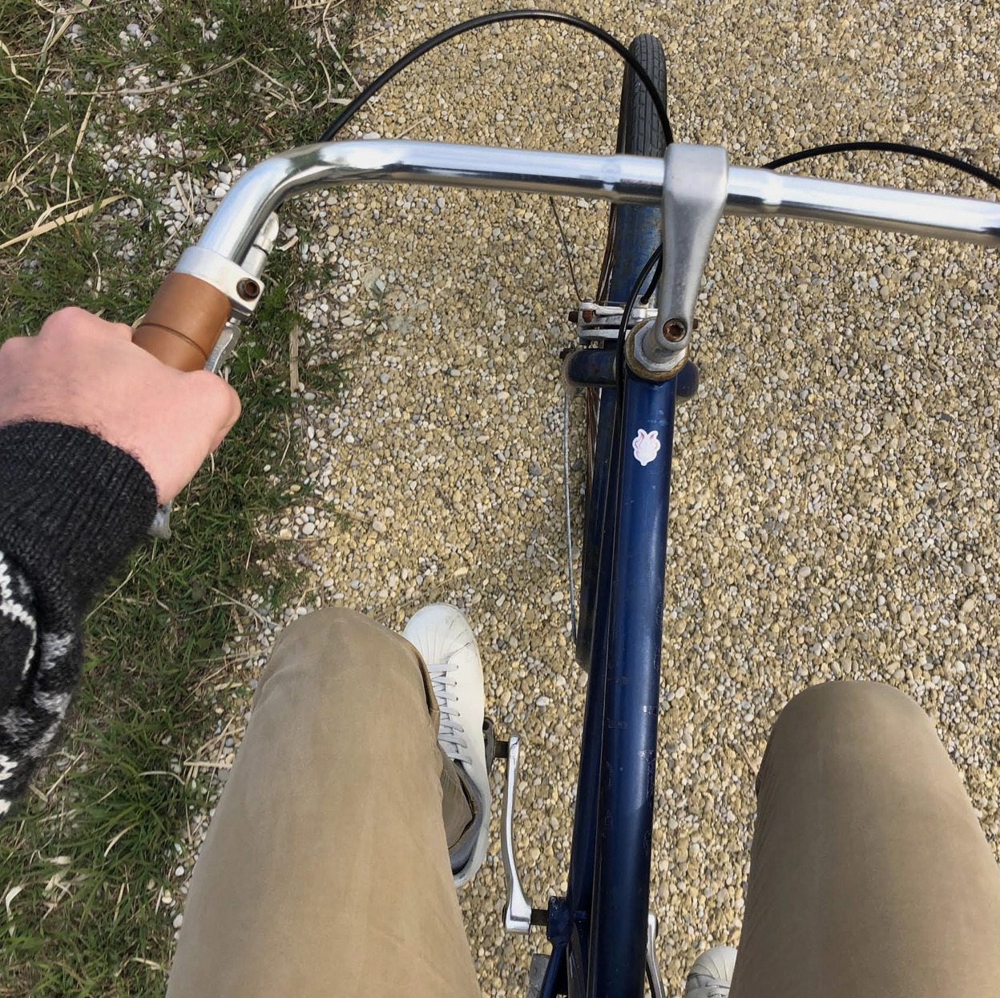
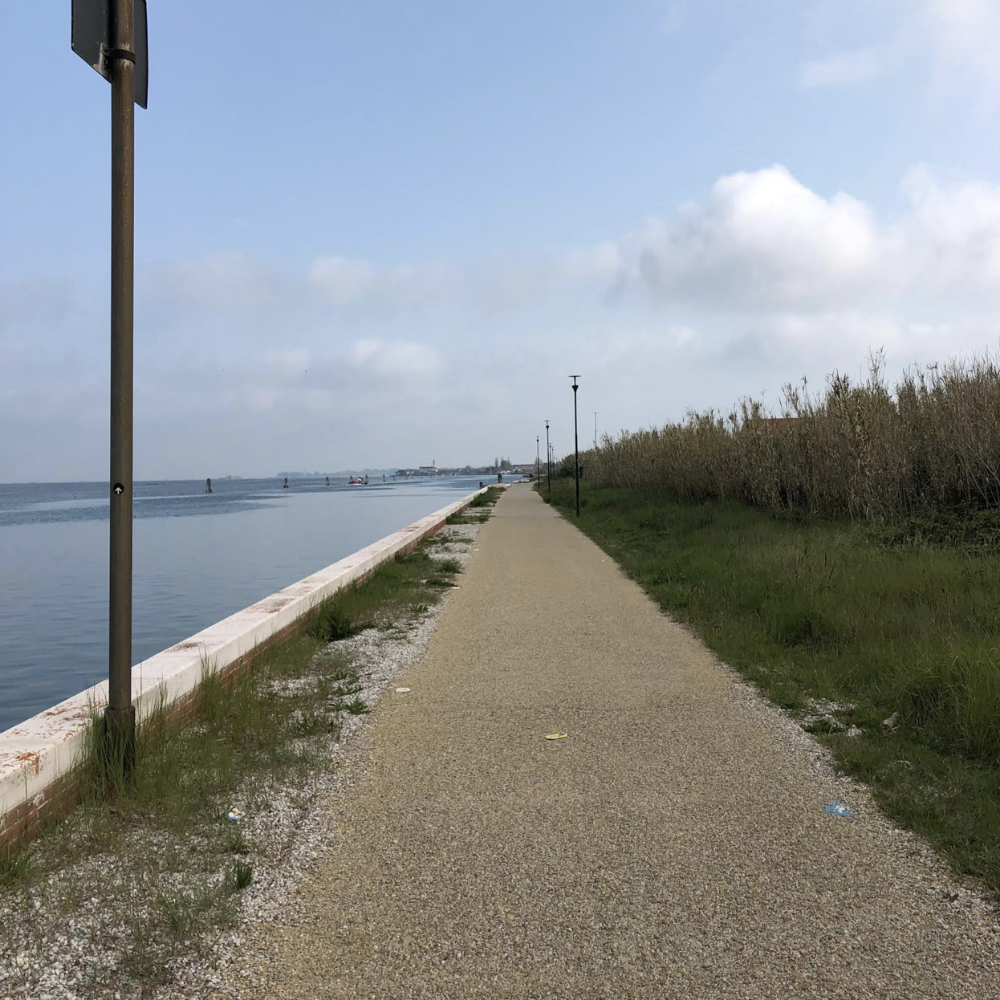

Feel free to use your dad's bikebici It's very light and perfect for your posture when riding. Plus, it gives you that vintage charmfascino.

Most likely you will find Manuel and Thomas in your way, and if you don't cycle fast enough.. well you'll end up watching their backs the whole timetempo.
One more thing you should be aware is that your dad's bike has broken brakesfreni, so be careful.

Pellestrina has a nice bike pathpista ciclabile which will allow you to go around the island right on the border between lagoon and land.

When ciclying with friends there's always one question being made: do we go towards San Pietro or Ca' Roman? They let you choose this time.